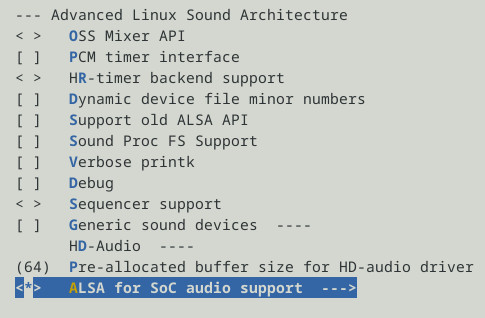
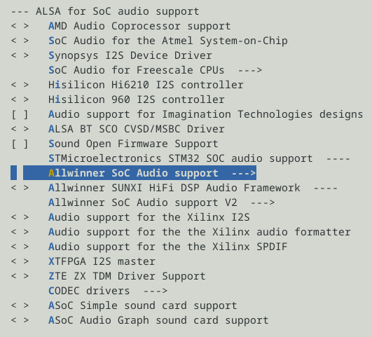
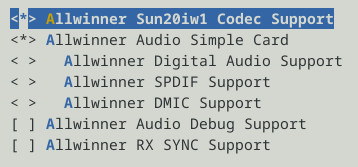
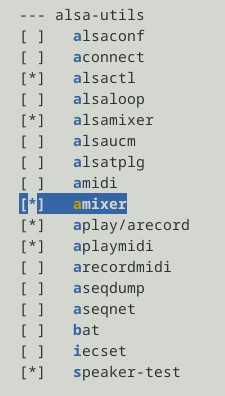

Steward
分享是一種喜悅、更是一種幸福
掌機 - Gaviar (小志掌機) - 移植Kernel audio
先紀錄一下Tina-Linux如何配置Audio，之後司徒找時間來寫一個精簡的Audio PCM Driver，因為Tina-Linux Audio的架構是符合Linux ASoC，有點太複雜了，我們短小精幹的小志掌機應該使用極致精簡的Audio PCM Driver就可以



Device Tree
&codec {
mic1gain = <0x1F>;
mic2gain = <0x1F>;
mic3gain = <0x1F>;
adcdrc_cfg = <0x0>;
adchpf_cfg = <0x1>;
dacdrc_cfg = <0x0>;
dachpf_cfg = <0x0>;
digital_vol = <0x00>;
lineout_vol = <0x1a>;
headphonegain = <0x03>;
pa_level = <0x01>;
pa_pwr_level = <0x01>;
pa_msleep_time = <0x78>;
playback_cma = <128>;
capture_cma = <256>;
status = "okay";
};
&sndcodec {
hp_detect_case = <0x00>;
jack_enable = <0x01>;
status = "okay";
};
&dummy_cpudai {
status = "okay";
};
Buildroot選擇amixer

Kernel Log
ALSA device list: #0: audiocodec
Audio Device
# ls /dev/snd/
controlC0 pcmC0D0c pcmC0D0p
測試
# amixer set Headphone on
Simple mixer control 'Headphone',0
Capabilities: pswitch pswitch-joined
Playback channels: Mono
Mono: Playback [on]
# speaker-test
speaker-test 1.2.16
Playback device is default
Stream parameters are 48000Hz, S16_LE, 1 channels
Using 16 octaves of pink noise
Rate set to 48000Hz (requested 48000Hz)
Buffer size range from 64 to 32768
Period size range from 63 to 16385
Periods = 4
[SNDCODEC][sunxi_card_hw_params][620]:stream_flag: 0
was set period_size = 12000
was set buffer_size = 24000
0 - Front Left
Time per period = 2.575911
0 - Front Left
Time per period = 2.997710
0 - Front Left
# aplay Front_Center.wav
Playing WAVE 'Front_Center.wav' : Signed 16 bit Little Endian, Rate 48000 Hz, Mono
[SNDCODEC][sunxi_card_hw_params][620]:stream_flag: 0